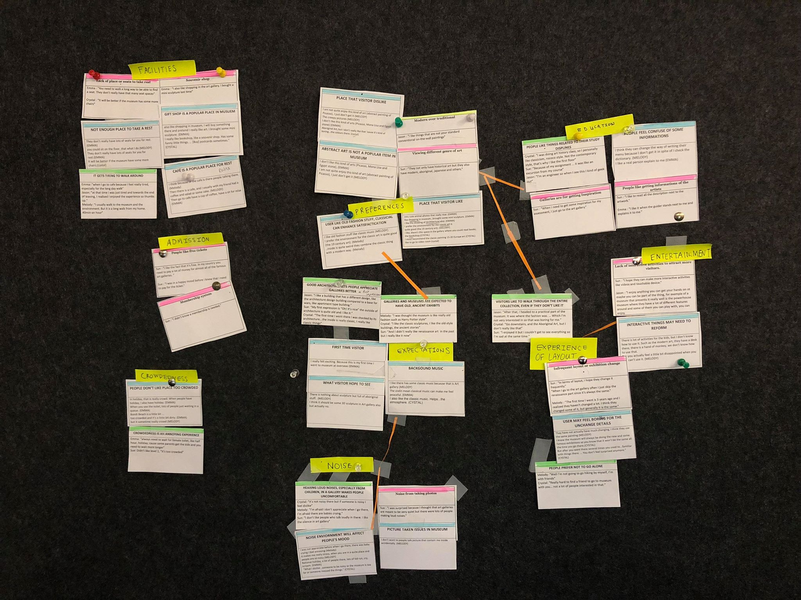

Art galleries and museums are educational and inspirational institutions which receive many visitors hoping for a unique experience. For the User Experience Studio unit, I collaborated with my group partner to explore the perceptions students had of the Art Gallery of NSW. From our research, we focused on the aspect of sound for student visitors to develop an app experience that would increase happiness and personalise gallery journeys through sound.
I was involved in all phases of the project from user research to experience prototyping. My main responsibilities were to define the design brief and work on refining the user experience of the gallery journey.
The goal of our research was to learn about the emotions visitors went through in their gallery journey. During our research, we incorporated a range of techniques from emphatic design. The use of these techniques are discussed below.
The first step was to understand the gallery space itself and this was done by walking through the gallery as visitors. We documented the experience from the entrance through to the exhibitions through photographs. These were annotated with directions, decisions made and feelings at each point which resulted in a storyboard of our experience as visitors. The walkthrough was useful as a starting point to prepare our user research and to gain context about the gallery itself.
The main insights from user research came from data collected from these sessions. These were focus group workshops with interactive abstract exercises aimed to get participants to think about and share their individual gallery journeys. We had 6 student participants, who had visited the art gallery or similar museums as we had easier access to them. Before each session, each participant was given a sensitising booklet prepared beforehand with small activities relating to their experiences for them to complete before their session. Similar to cultural probes, these were to give our participants an idea what to expect during the session. Our generative session involved collage activities with a like/dislike, past/present template regarding their idea of art galleries and a timeline for them to place emoji stickers of their most recent journey to the art gallery. These were discussed in a group interview to allow them to explain their collage expressions.
To analyse and gain insights from our research, each of us looked through the notes and comments made from the generative sessions and sensitising booklets and wrote down points of interest on statement cards individually. These cards were titled with the overall topic of the comments and together we clustered all our cards into similar themes. The resulting themes were then further written on post-its and clustered using the affinity diagramming method with its overarching insight at the top for clarity.
Based on data from participants and our understanding of the gallery from our visit, we identified a few recurring themes:
From these, we decided to focus on improving the latter - auditory experiences. Sound was a surprise component to people's journeys, whether it be chatter from other visitors, guides or classical music performances. The Art Gallery did offer audio guides for people with a disability, but it was notable that whilst not the core of the gallery experience, the sounds within the gallery affected our participants’ mood. Since the gallery had wealth of artworks to see, we felt that sound was an opportunity to engage and heighten focus towards the exhibits.
For our design, we therefore aimed for an improved auditory atmosphere to instil tranquillity and enhance the gallery as a learning environment.
To create our concepts we each thought of two different ideas and created a storyboard from it. They were then compared using a decision matrix based on criteria we thought was necessary and we chose the concept that we felt ticked the most important criteria as the central idea and added some aspects that worked in the others.
The final concept was a mobile music app which played a curation of songs inspired or created from, the era or theme of the exhibition the user is currently in. For example, it would play classical music in the 18th century exhibition, and as users move into the 70’s it would transition to instrumental disco. As such, the music app would create a playlist based on artworks and places you visited within the gallery, which could be saved and allows people to request songs to improve the collection.
Concept wireframes I created for the music app. Users would have the opportunity to save the songs after they complete their visit and play it again on their next visit or start a new journey. It also features a recommendation feature if they didn't like what was played and the ability to end the journey at any time.To further the concept we considered a music journey that would end in shared room experience where visitors could relax and explore others’ gallery journeys. This was later scrapped however, because it required additional space and was counterintuitive to the problems identified in our research. In refining our concept, I did further research in multisensory design, levels of engagement for app usage and aligned our target user needs to Reiss’ 16 basic motivations.
We envisioned that it would be possible with the implementation of iBeacons - an Apple technology standard utilising Bluetooth Low Energy (BLE) emission from small objects called beacons. iBeacons allows for indoor location tracking so with the strategic placement of beacons near featured artworks and within exhibition spaces, events could be triggered within the music app with a Bluetooth-activated phone.
Given that most perceive the gallery in a visual sense, people were intrigued by the AGNSW Music App concept. The ability to have a copy of the playlist even after the journey would create a nice token of your visit. However, it could be improved. This could include understanding where songs would be sourced from, what kinds of music are available or could be requested and the transitions moving from artwork to artwork to ensure a seamless experience which expands on the existing gallery collections.